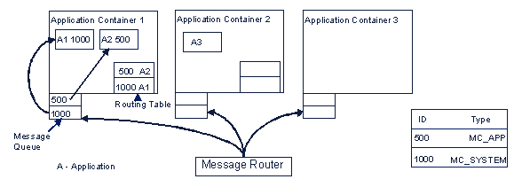
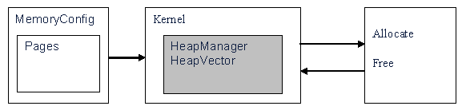

Kernel Overview
1 Introduction
Kernel module defines core-functionality of APOXI and the layer to the operating system. The kernel interfaces for some core functionalities of APOXI and OS layer are described in the following sections.
2 OS Layer Interfaces
Kernel provides a generalized OS interface for APOXI. OS interfaces provided by kernel are listed in the following:
3 Core Functionality
3.1 Application Container
An application container is an ApoxiThread and it maps to one operating system thread. Application container holds a number of applications. These applications are managed by an internal and resource-friendly APOXI scheduler, which assigns the threads processing time to the applications in a cooperative way.
When a message is received, the application container calls the applications which are registered for that particular message in a sequential manner to handle the message.
3.2 Application
An application is the instance for handling and routing messages. All incoming messages are treated in OnMessage() and routed to user-dispatchers and windows. Every application is part of an application container and can have one or more windows. To extend the handling and routing of messages in an easy manner it is possible to add user-defined dispatchers to an application.
3.3 Message Handling / Routing
The message handling structure includes, application container and application. Message routing is done by MessageRouter. It is a static class to perform the base functionality of APOXI message routing. Posting a message in general means to enqueue the message to those message queues of application containers or service threads which are ready to receive this message.
3.3.1 Message Handling in Application Container
Each application container contains a message queue and routing table. All the registered messages will be stored in the routing table and messages sent to application container will be pushed into the message queue. The message router routes the messages to application containers. There are several generally used message types: MC_SYSTEM, MC_APP, MC_FOCUS, MC_CONTROL, etc. Different message types are dispatched by message router and application container differently.
The example for handling of messages in application container is shown in figure 1.
 |
Figure 1. Message Handling in Application Container
3.3.2 Message Handling in Application
Inside application, function RouteMessage() routes the message received. The messages will be first routed to the user dispatcher list. It contains a series of user defined dispatchers. If the messages cannot be dispatched in the user dispatcher list, MC_FOCUS type message will be routed directly to the focused window.
If the message is not MC_FOCUS type, it will be routed to the child window list of the application. The routing will not be finished until the message has been dispatched or all windows in the list have analyzed the message.
If the dispatching of the message to the child window is not successful, then this message will be processed by the HandleMessage() in the application.
3.4 Message Hooking
Message hooking enables the applications to hook into messages (especially indications, like new SMS, alarm expired..) and react on them before they are sent to the dedicated applications.
The message hook object holds a trigger method, which is called when a posted message matches the message hooks requirements. For the execution of this trigger method there are two policies defined:
3.4.1 Hooking Mechanism
The hooking mechanism is based on a list of message hooks which is stored in a global scope. This list is only be accessed when message hooks are attached or detached and of course if a message is posted. This list consists of references to the real message hook instances held by the message hook owner (application/service thread). Every message hook can be reused as often as needed and is open to all applications.
Once there are entries in the global message hook list, every posted message is routed to the message hook’s method Suspend(). In this method the incoming message is checked against every message hook. If the message ID of message hook matches the message, then a notification of the owner of the message hook is done.
The main task of the notification is simply calling the trigger method OnMessage() of the hooking message hook instance. This notification can be either in asynchronous mode or the synchronous mode depending on the policy applied to the message hook.
Resuming of the message hook is called after the return of the message hook notification method. This return parameter is used in Resume() to describe whether that instance of message hook wants to discard the hooked message or mark it to be sent.
Message hook is detached from the global list of message hook references using the method Detach(). When detached, the message hook is marked to be deleted from the global list as soon as there is no pending hooked message referring to this message hook.
3.5 ServiceThread
ServiceThread is used to implement services, i.e. tasks which perform permanent background activity like network services. A service thread does not need any graphical user interface but needs to run as an own thread. It only awakes from idle when it receives a message or when a timer expires.
3.6 Timer
A timer can be started, stopped, resumed and restarted. It has a time-out value and when this expires, a time-out message will be sent. A timer always belongs to one application and may not be shared.
3.7 Alarm Manager
Alarm manager handles multiple alarms. It handles one alarm request per application. This means it holds a list of each application's next alarm time stamp.
Whenever an alarm expires, the corresponding application will get informed by sending the AlarmNotificationMsg. Applications which receive alarm notification message have to send its next alarm request if it has one. If more than one applications are requesting an alarm with the same point of time the alarm manager sends the alarm notification message to all applications.
When power is on the alarm manager sends the alarm notification message to all applications which had missed an alarm during power off. Each alarm can also be defined to power on the phone if it is turned off at alarm time.
3.8 Memory Management
One idea behind the APOXI memory management is that it is configurable for certain projects because projects differ in their memory requirements. So the memory configuration itself is divided from the algorithms which allocate and free memory. The algorithms are implemented in the kernel and are using the configuration table defined in MemoryConfig file.
The role of kernel in APOXI memory management is shown in the following figure.
 |
As shown in the figure, kernel provides the HeapManager and HeapVector. The allocation/free methods are using the HeapManager which will find a block of requested memory and frees used memory blocks.
3.9 Generic Worker Task
The generic worker tasks runs on a lower priority than the rest of the system. Applications can submit work packages (threadlets) to the input queue of this task. The queue will be treated as FIFO queue. A threadlet exposes a generic interface to executing parts of an application in context of another thread (i.e the GenericWorkerTask). When the threadlet is executed, the application can decide to wait synchronously by the active wait mechanism. It can also start the threadlet asynchronously.